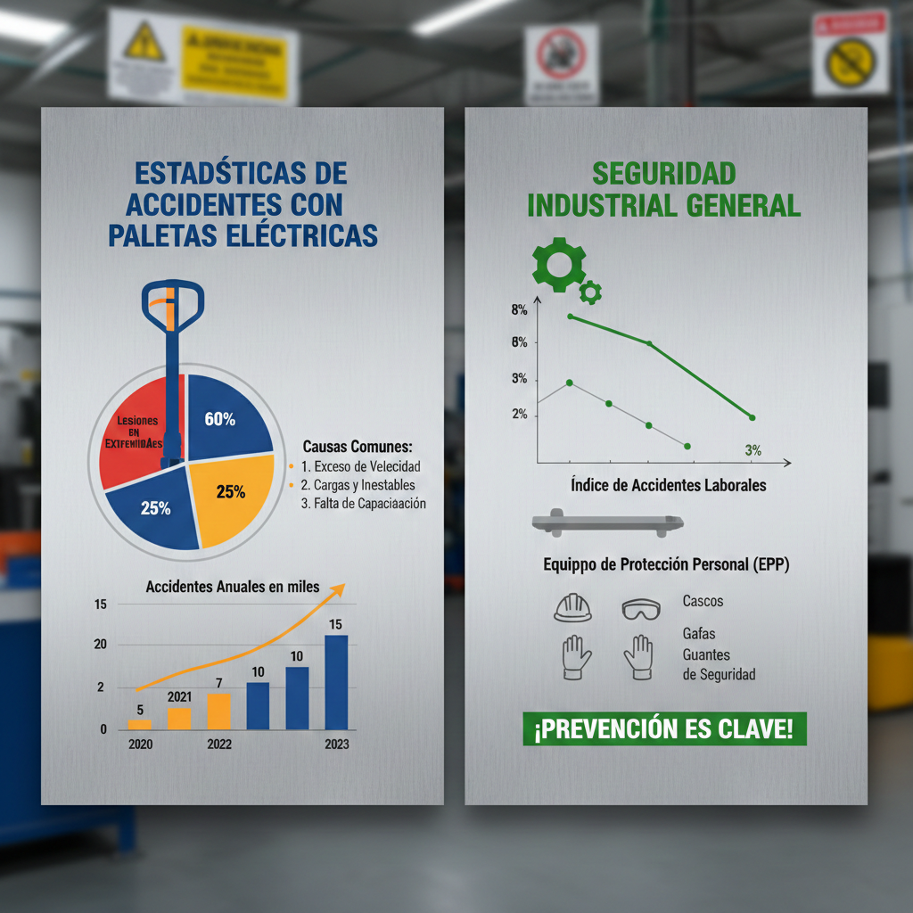

Paradoja de la "Simplicidad"
A menudo denominados "caballos de batalla" de la logística, los patines eléctricos parecen herramientas sencillas de manejar. Sin embargo, esta percepción es lo que los convierte en uno de los equipos más peligrosos del entorno industrial.

Anualmente, se registran numerosos incidentes y lesiones relacionadas. La seguridad no depende del diseño de la herramienta, sino de la profesionalización del operador al mando.